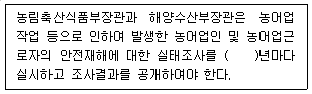
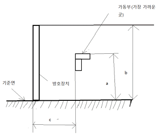
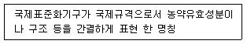
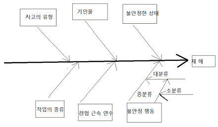
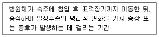
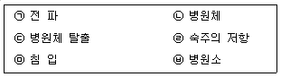
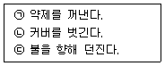

농작업안전보건기사 (2020-09-26 기출문제)
1과목: 농작업과 안전보건교육
1. 농작업 안전보건교육을 운영할 때 유의할 점으로 틀린 것은?
- 교육대상자가 자발적으로 참여토록 한다.
- 휴식시간은 최소한으로 짧게 배정한다.
- 양과 질을 모두 측정할 수 있는 평가지표의 준비가 필요하다.
- 인간의 신체적, 정신적, 사회적 측면의 조화를 고려하여 실시해야 한다.
(정답률: 알수없음)
2. 농어업인의 삶의 질 향상 및 농어촌 지역 개발촉진에 관한 특별법에 관한 설명이 틀린 것은?
- 국가와 지방자치단체는 농어업 작업으로 인하여 농어업인에게 주로 발생하는 질환의 예방·치료 및 보상을 위한 지원시책을 마련하여야 한다.
- 정부는 농어업인 등에 대한 복지실태 조사를 5년마다 실시하여야 한다.
- 이 법은 농어촌 지역 간의 생활격차를 해소하고 교류를 활성화하는 것을 기본이념으로 한다.
- 이 법은 농어촌학교 학생의 학습권 보장에 관한 내용을 포함하고 있다.
(정답률: 알수없음)
3. 농작업 안전교육의 방향으로 틀린 것은?
- 안전의식을 일깨워 줌
- 작업을 하기 위한 주위 환경을 쾌적하게 유지
- 작업과정이나 과정 중의 행동을 불안하게 유지
- 작업을 하기 위해 다루는 도구나 설비들을 안전하게 유지
(정답률: 알수없음)
4. 농약의 표시사항은 포장지 전체를 고려하여 사용자가 쉽게 알아볼 수 있도록 크게 하여야 한다. 포장지 앞면에 배치하여야 할 개별 표시사항에 해당되지 않는 것은? (단, 농약, 원제 및 농약활용기자재의 표시기준을 적용한다.)
- '농약' 문자 표기
- 원제의 등록번호
- 용도 구분
- 기본 주의사항
(정답률: 알수없음)
5. 농약관리법 시행령에 따른 '농약 등의 안전 사용기준'이 틀린 것은?
- 적용대상 농작물과 병해충별로 정해진 사용방법·사용량을 초과하여 사용할 것
- 사용대상자가 정해진 농약 등은 사용대상자 외의 사람이 사용하지 말 것
- 사용지역이 제한되는 농약 등은 사용제한지역에서 사용하지 말 것
- 적용대상 농작물에 대하여 사용시기 및 사용가능횟수가 정해진 농약 등은 그 사용시기 및 사용가능횟수를 지켜 사용할 것
(정답률: 알수없음)
6. 산업재해보상보험법 시행령상 산업재해보상보험의 의무가입 사업장 적용 제외대상인 것은?
- 상시근로자 1인 미만의 카페
- 법인이 아닌 자의 사업으로서 상시근로자 10인 미만의 임업(벌목업) 사업
- 법인이 아닌 자의 사업으로서 상시근로자 5인 이상의 농업 사업
- 법인이 아닌 자의 사업으로서 상시근로자 5인 미만의 어업 사업
(정답률: 알수없음)
7. 농업기계화 촉진법 시행규칙상 검정대상 농업기계 중 안전점검 대상에 해당되는 것은?
- 곡물건조기
- 농업용 트랙터 보호구조물(ROPS)
- 비료살포기(승용자주형)
- 농업용 베일러(승용자주형)
(정답률: 알수없음)
8. 농작업 안전보건 교육을 ADDIE모형으로 진행하려 한다. 4번째 단계에서 수행할 내용은?
- 교육생의 요구를 분석한다
- 학습목표를 서술하고 교육 내용을 설계한다
- 교육프로그램을 개발한다
- 개발된 교육프로그램을 실행한다
(정답률: 알수없음)
9. 농작업 안전보건관리 시스템 중 '감시(Surveillance)'에 해당하는 것은?
- 농작업 재해의 판정 및 보상처리
- 지역별 농작업 재해발생 현황 모니터링
- 농작업의 건강유해요인의 노출저감 방안 개발
- 농작업 사고자에 대한 직업적 재활프로그램 운영
(정답률: 알수없음)
10. 실제와 유사한 상황에서 구성된 시나리오를 수행하며 문제 상황에 대한 대처방법을 학습하는 교육방법은?
- 실연(시범)
- 사례연구
- 집단토의
- 모의 실험극
(정답률: 알수없음)
11. 개정된 NIOSH 들기 작업지침을 이용하여 인력 운반 작업의 권1장 무게 한계를 구할 때 고려할 요소가 아닌 것은?
- 수평 계수
- 작업자 연령 계수
- 비대칭 계수
- 빈도 계수
(정답률: 알수없음)
12. 다음 설명의 괄호 안에 알맞은 수치는? (단, 농어업인의 안전보험 및 안전재해예방에 관한 법률을 적용한다.)

- 1
- 2
- 3
- 4
(정답률: 알수없음)
13. 농작업 안전재해에 하인리히의 재해 구성 비율을 적용한다면, 87건의 경상이 발생한 경우에는 몇 건의 무상해 사고를 예측할 수 있는가?
- 87건
- 174건
- 600건
- 900건
(정답률: 알수없음)
14. 농업기계 안전기준에 따라 가동부의 방호장치로부터 측방 안전거리가 그림과 같을 때 방호장치의 높이는 몇 mm 이상이어야 하는가?

- 500mm
- 800mm
- 1,000mm
- 1,200mm
(정답률: 알수없음)
15. 농어업 작업 안전재해예방에 관한 설명으로 틀린 것은? (단, 농어업인의 안전보험 및 안전재해예방에 관한 법률을 적용한다.)
- 농어업인안전보험이란 농어업인에게 발생한 농어업작업안전재해를 보상하기 위한 보험이다.
- 농업인과 가족구성원이 농작업을 수행하는 경우 농어업인의 안전보험 및 안전재해 예방에 관한 법률에 따라 농업인은 자신과 그의 가족구성원을 위하여 동법상의 안전재해에 대한 예방 의무를 이행하여야 한다.
- 농림축산식품부장관과 해양수산부장관은 농어업작업안전재해를 예방하기 위하여 농어업작업 안전재해 예방 기본계획을 5년마다 각각 수립·시행하여야 한다.
- 농어업작업안전재해는 농어업작업으로 인하여 발생한 농어업인 및 농어업근로자의 부상·질병·장해 또는 사망을 말한다.
(정답률: 알수없음)
16. 일반적으로 농작업과 농업인들의 특징에 해당되지 않는 것은?
- 농작업의 비표준화
- 노동 집약적인 작업 특성
- 농업 인구의 저연령화
- 특정 기간에 집중되는 작업
(정답률: 알수없음)
17. 문제해결력, 창의력, 비판력, 조직력, 정보수집력, 분석력 등을 평가할 수 있는 농작업 안전보건 교육의 평가 방법은?
- 질문지법
- 실기시험
- 자기 평가 보고서
- 서술형 및 논술형 검사
(정답률: 알수없음)
18. 농어업인의 안전보험 및 안전재해예방에 관한 법률에 따른 '농업인'에 해당하는 자는?
- 500m2의 농지를 경작하는 사람
- 1년 중 60일을 농업에 종사하는 사람
- 농업경영을 통한 농산물의 연간 판매액이 100만원인 사람
- 관련법에 의해 설립된 영농조합법인의 농산물 가공활동에 2년 계속하여 고용된 사람
(정답률: 알수없음)

19. 농작업환경에서 직접적인 건강 유해요인으로 가장 거리가 먼 것은?
- 바이오에어로졸
- 더위와 추위
- 불편한 작업자세
- 가시광선
(정답률: 알수없음)
20. 다음 중 농작업 안전보건 교육을 실시할 때 가정 먼저 해야 할 일은?
- 교육요구 분석
- 학습자 분석
- 교육장소 선정
- 교육내용 구성
(정답률: 알수없음)
2과목: 농작업 안전관리
21. 이앙기의 안전사용 방법으로 틀린 것은?
- 승용 이앙기를 타거나 내릴 때 이앙기를 등지지 않는다.
- 트럭 등에 적재 시 사다리의 길이는 차량 적재함 높이의 4배 이상이 되도록 한다.
- 트럭 등에 적재 시 전진으로 올라가고 후진으로 내려온다.
- 이앙기에 모 매트를 보급할 때는 반드시 정지한 후 보충한다.
(정답률: 알수없음)
22. 콤바인의 안전이용 지침으로 옳지 않은 것은?
- 운전석 이외의 부분에 사람을 태우지 않는다.
- 엔진의 시동 시에는 반드시 운전석에 앉아서 각종 조작레버의 상태를 확인한 후 시동을 건다.
- 정치 탈곡 시에는 탈곡과 관계없는 예취부 등은 정지한다.
- 노상이나 경사지의 주행 시에 자동 수평 제어 장치 기능을 사용한다.
(정답률: 알수없음)
23. 동력경운기 안전사용 및 점검방법으로 옳지 않은 것은?
- 언덕길 또는 경사지에서는 조향클러치를 조작하지 말고 핸들을 조작하여 선회한다.
- 조속레버를 시동위치에 둔 상태에서 시동핸들을 돌려 분사음을 듣는다.
- 주행 중에 변속하고자 할 때에는 조속레버를 고속 위치에서 한다.
- 경사지를 내려갈 때에는 조속레버를 저속 위치에 놓는다.
(정답률: 알수없음)
24. 동일 분자 내에 물에 친수기와 소수기를 갖는 화합물로 제재의 물리화학적 성질을 좌우하는 역할을 하는 것은 무엇인가?
- 계면활성제
- 용 제
- 고체희석제
- 고착제
(정답률: 알수없음)
25. 하인리히가 정의한 재해 구성 비율에 대한 이론으로, 중상·사망, 경상 그리고 무상해 사고의 비율은 무엇인가?
- 1:10:30
- 1:10:600
- 1:29:300
- 1:30:600
(정답률: 알수없음)
26. 다음 설명에 적합한 농약의 분류 명칭은?

- 화학명
- 일반명
- 품목명
- 상품명
(정답률: 알수없음)
27. 농기계 및 농작업의 안전점검을 위한 점검표(체크리스트) 작성 시 유의사항으로 거리가 먼 것은?
- 위험도가 낮은 것부터 순차적으로 작성할 것
- 내용은 구체적이고 재해예방에 효과가 있을 것
- 사업장에 적합하고 쉽게 이해되도록 독자적인 내용으로 작성할 것
- 정기적으로 검토하여 계속 보완하면서 활용할 것
(정답률: 알수없음)
28. 농작업 환경에서의 질식사고 예방을 위한 공기농도와 유해가스 노출기준으로 틀린 것은?
- 산소 : 18.5 ~ 23%
- 이산화탄소 : 3% 미만
- 황화수소 : 10ppm 미만
- 일산화탄소 : 30ppm 미만
(정답률: 알수없음)
29. 국내 사용등록 또는 잔류허용기준에 설정된 농약 이외의 농약 사용을 금지하는 제도는 무엇인가?
- Codex
- MRL
- GAP
- PLS
(정답률: 알수없음)
30. 농작업 재해발생 시 조치순서로 옳은 것은?
- 산업재해발생 → 원인강구 → 대책수립 → 대책실시 → 긴급처리
- 산업재해발생 → 긴급처리 → 재해조사 → 원인강구 → 대책수립
- 산업재해발생 → 재해조사 → 긴급처리 → 원인강구 → 대책수립
- 산업재해발생 → 긴급처리 → 원인강구 → 대책수립 → 재해조사
(정답률: 알수없음)
31. 다음 중 농기계에 주로 많이 사용되는 연료의 안전사용 방법에 해당하지 않는 것은?
- 용기는 적절한 것을 사용하고 전용장소에 보관한다.
- 보관 장소에는 소화기를 준비하고 화기를 엄금한다.
- 장기간 보관한 연료를 농업기계에 먼저 보급하여 사용한다.
- 급유를 할 때에는 반드시 농업기계의 엔진을 정지시켜 식힌 상태에서 한다.
(정답률: 알수없음)
32. 로더의 안전사용 방법으로 틀린 것은?
- 작업 중에는 무게 중심을 낮추도록 한다.
- 로더 분리 시 유압호스를 분리한 후 유압동력을 끈다.
- 상승된 로더 버킷 아래에서는 통행하거나 작업을 하지 않는다.
- 버킷에 사람을 탑승시켜 이동하거나 들어 올려 작업하지 않는다.
(정답률: 알수없음)
33. 재해원인을 분석하여 제시하는 방법은 다양하다. 다음 그림과 같이 재해원인을 분석하여 제시하는 방법으로 알맞은 것은?

- 파레토 분석
- 특성요인 분석
- 클로즈 분석
- 관리도 분석
(정답률: 알수없음)
34. 다음 중 농작업 안전관리와 관련한 문제점이 아닌 것은?
- 농촌인구의 급격한 노령화로 인한 사고위험 증가
- 자영농업인은 산업재해보상보험의 의무가입 대상이 아님
- 우리나라 전체 산업분야 평균재해율에 비해 농업분야의 재해율이 높음
- 농업기술 진보에 의한 새로운 위험요인이 발생하지 않음
(정답률: 알수없음)
35. 경사지에서 농업기계 작업 시 주의사항으로 틀린 것은?
- 경사지에서 등고선 방향으로 주행할 경우엔느 분담하중이 큰 쪽을 가능한 한 낮은 쪽으로 향하도록 한다.
- 경사지에서 이동 시 작업기를 내려 무게중심을 낮추어 준다.
- 내리막길 주행 중 변속장치를 조작하지 않도록 한다.
- 오르막 방향으로 주행할 때에는 앞바퀴가 들리기 쉬우므로 주의한다.
(정답률: 알수없음)
36. 농기계 추락전도 사고 예방을 위한 안전 수칙으로 적절하지 않은 것은?
- 농로 운행 및 작업 수행 시 회행 장소를 미리 염두에 두고 작업하도록 한다.
- 노면의 깊은 바퀴자국, 물웅덩이 등은 미리 평평하게 해두도록 한다.
- 논둑을 넘을 때는 차체가 논둑에 대해 직각이 되도록 한다.
- 경사지에서 등고선 방향으로 주행할 때는 분담하중이 적은 쪽을 경사지의 높은 쪽으로 향하도록 한다.
(정답률: 알수없음)
37. 기계의 안전성을 높이기 위한 안전장치 중 성격이 다른 것은?
- 회전부 덮개가 열리면 작동이 멈추는 장치
- 플러그 모양이 일반 제품과 다른 고전압용 기계 설비
- 작동이 중지되어도 일정 시간 동안 고열부 차단 덮개가 열리지 않는 기계
- 정전이 되어도 일정시간 긴급발진을 해서 제어기가 작동하도록 하는 장치
(정답률: 알수없음)
38. 농업기계 사고의 빈도를 줄이기 위한 농기계 등화장치 안전기준 중 승용자주형 농업기계(농업용 동력운반차, 퇴비살포기 등)로 최고주행속도가 얼마 이상인 기계는 전조등, 후미등, 방향지시등을 부착하여야 하는가?
- 10km/h
- 15km/h
- 20km/h
- 25km/h
(정답률: 알수없음)
39. 트랙터 작업 전 주의사항으로 옳지 않은 것은?
- 작업하기 전에 기계의 각 부위에 표시된 안전수칙, 주의사항 등을 확인한다.
- 손잡이나 발판 등에 기름이나 진흙 등이 묻어 있으면 닦아낸다.
- 운전석 주위에 부품이나 공구를 놓아 고장 시 쉽게 조치할 수 있도록 한다.
- 부속작업기가 확실하게 장착되었는지 확인한다.
(정답률: 알수없음)
40. 질식사고 예방을 위한 환기방법으로 틀린 것은?
- 밀폐 공간 작업을 시작하기 전과 작업 중에도 계속 환기한다.
- 적절한 환기를 위해 급기부와 배기부를 인접하여 설치한다.
- 급기 시 토출구를 작업자 머리 위에 설치한다.
- 배기 시 유입구를 작업공간 깊숙이 위치한다.
(정답률: 알수없음)
3과목: 농작업 보건관리
41. 다음 안전보건 표지의 의미로 옳은 것은?(단, 산업안전보건법 시행규칙을 적용한다)
- 출입금지
- 인화성물질 경고
- 방사성물질 경고
- 급성독성물질 경고
(정답률: 알수없음)
42. 소음의 노출기준 적용 시 115dB(A) 소음이 발생하는 작업장에서 1일 허용 가능한 연속 작업시간은? (단, 충격소음은 제외하며, 화학물질 및 물리적 인자의 노출기준을 적용한다.)
- 2시간
- 1시간
- 30분
- 15분
(정답률: 알수없음)
43. 농작업에서 발생 가능한 직업성 피부질환의 요인을 간접과 직접적 요인으로 구분할 때 간접적인 요인으로 틀린 것은?
- 자극물질
- 온도와 습도
- 개인 위생
- 멜라니 색소량
(정답률: 알수없음)
44. 농작업의 위험요인 노출수준 측정에 직독식 기기를 이용할 때에 대한 설명으로 틀린 것은?
- 준비와 분석시간이 짧아 측정자가 시간을 절약할 수 있다.
- 작업자 노출평가보다 지역적인 노출평가에 더 적합하다.
- 위험요인의 농도가 시간에 따라 변하는 경우 빠른 대처가 어려울 수 있다.
- 기기 자체의 정확도, 신뢰도에 따라 같은 환경에서도 다른 값으로 측정될 수 있다.
(정답률: 알수없음)
45. 농작업 과정에서 노출 가능한 입자상 물질에 대한 설명으로 틀린 것은?
- 유기분진에 의한 대표적 호흡기계 질환은 석면폐증이다.
- 분진, 미스트, 바이오에어로졸 등이 입자상 물질에 해당된다.
- 폐의 정화능력을 초과하는 분진이 흡입되는 경우 폐의 손상을 초래한다.
- 분진의 평균 입경이 작을수록 폐포에 침착될 가능성이 높아진다.
(정답률: 알수없음)
46. 쯔쯔가무시증 등 진드기매개 감염병의 예방대책으로 틀린 것은?
- 진드기 기피제를 사용
- 우유와 유제품을 살균하여 섭취
- 적합한 작업 복장으로 피부노출 최소화
- 작업 중 풀숲에 앉아서 용변을 보지 말 것
(정답률: 알수없음)
47. 실외에서의 노지작업을 위하여 온열스트레스를 평가할 때 인용되는 WBGT 지수의 산출에 활용되지 않는 것은?
- 습구온도
- 적구온도
- 흑구온도
- 건구온도
(정답률: 알수없음)
48. 농약의 안전 사용 기준의 세부 기준으로 틀린 것은? (단, 농약 등의 안전사용기준을 적용한다.)
- 적용대상 농작물에만 사용할 것
- 적용대상 농작물과 병해충별로 정해진 사용방법, 사용량을 지켜 사용할 것
- 농약 별로 정해진 농약활용기자재를 통해서만 사용할 것
- 사용지역이 제한되는 농약은 사용제한지역에서 사용하지 말 것
(정답률: 알수없음)
49. 다음의 설명에 해당하는 것은?

- 잠복기
- 생존기
- 유사기
- 침체기
(정답률: 알수없음)
50. 스트레스에 대한 설명으로 틀린 것은?
- 신체에 가해지는 정신적, 환경적 요인은 모두 스트레스의 원인이 될 수 있다.
- 스트레스는 종류에 관계없이 모두 신체 생리작용에 해로운 작용만을 유발한다.
- 스트레스 증상은 두통, 불안감, 소화기계 이상 등 정신적·육체적으로 다양하게 발생할 수 있다.
- 스트레스는 심장질환 촉발, 인지능력 저하 및 면역기능 저하를 유발할 수 있다.
(정답률: 알수없음)
51. 선별 포장 작업, 과일 봉지 씌우기 등과 같이 손가락 및 손목 등을 사용하는 작업에 가장 적합한 인간공학적 평가 도구는?
- JSI
- NLE
- RULA
- OWAS
(정답률: 알수없음)
52. 농작업 유해요인에 대한 설명으로 틀린 것은?
- 소음, 진동 등은 물리적 유해요인에 해당된다.
- 인간공학적 유해요인은 근골격계질환을 유발할 수 있다.
- 스트레스 등의 정신적 요인은 농작업 유해요인으로 볼 수 없다.
- 농업인의 작업 특성상 물리적 및 화학적 유해요인에 복합적으로 노출될 수 있다.
(정답률: 알수없음)
53. 감염성 질환의 생성과정이 옳은 것은?

- ㉡ → ㉢ → ㉠ → ㉥ → ㉤ → ㉣
- ㉥ → ㉡ → ㉢ → ㉤ → ㉠ → ㉣
- ㉡ → ㉥ → ㉢ → ㉠ → ㉤ → ㉣
- ㉡ → ㉤ → ㉢ → ㉥ → ㉠ → ㉣
(정답률: 알수없음)
54. 보통독성 농약의 취급제한 기준 중 보관에 관한 사항으로 틀린 것은? (단, 농약 등 및 원제의 취급제한기준을 적용한다.)
- 잠금장치가 있는 별도의 보관함에 보관하여야 한다.
- 사람의 거주장소, 의약품, 식료품 또는 사료의 보관 장소와 구획하여 보관하여야 한다.
- 환풍 및 차광시설이 완비된 창고에 "농약창고"임을 표시하고, Ⅱ급(고독성) 농약 등과 별도로 보관하여야 한다.
- 소방시설 설치·유지 및 안전관리에 관한 법률 및 소화기구 및 자동소화장치의 화재안전기준에 따라 그 시설에 상응하는 소화기구를 비치하여야 한다.
(정답률: 알수없음)
55. 2시간 동안의 작업을 워크 샘플링 방법으로 200회 샘플링 한 결과 40번 손목이 꺾인 것을 확인하였다. 이 작업의 시간당 손목 꺾임 시간은?
- 8분
- 10분
- 12분
- 14분
(정답률: 알수없음)
56. 호흡기질환 예방을 위한 보호구 관리방법으로 틀린 것은?
- 호흡용 보호구를 착용한 후에는 공기가 새는 곳이 있는지를 확인한다.
- 호흡용 보호구의 필터는 유해인자의 종류에 따라 선택적으로 사용하는 것이 좋다.
- 마스크와의 접촉부위에 타월을 대고 사용해서는 안 된다.
- 호흡용 보호구의 필터는 감염의 우려가 있으므로 염기성세제로 세척하여 직사광선에 소독한다.
(정답률: 알수없음)
57. 한탄 바이러스에 의해 발생하는 바이러스성 질환으로 고열, 혈압 저하 및 요독증에 의한 출혈성 경향을 보이기도 하는 감염성 질환은?
- 말라리아
- 브루셀라증
- 신증후군출혈열
- 쯔쯔가무시증
(정답률: 알수없음)
58. 트랙터 운전 시, 운전자에게 노출되는 진동을 줄이기 위한 방법으로 틀린 것은?
- 쿠션을 이용해 운전석 진동을 줄여준다.
- 방진장갑을 착용하여 운전대 진동을 줄여준다.
- 트랙터 운전시간을 길게 하여 신체로 전달되는 진동략을 줄여준다.
- 트랙터를 주기적으로 정비하여 트랙터 자체의 진동을 줄여준다.
(정답률: 알수없음)
59. 농작업 환경 중 밀폐된 버섯농장이나 돈사와 같은 축사에서 주로 문제되는 생물학적 유해인자는?
- 소 음
- 석 면
- 농 약
- 유기분진
(정답률: 알수없음)
60. 농약의 정의로 옳지 않은 것은?(단, 농약관리법을 적용한다)
- 농작물을 해치는 균을 방제하는 데에 사용되는 살균제·살충제·제초제
- 농작물의 생리기능을 증진하거나 억제하는 데에 사용하는 약제
- 농작물 표면의 오염물질을 제거하는 데에 사용되는 세척제·계면활성화제
- 그 밖에 농림축산식품부령으로 정하는 약제
(정답률: 알수없음)
4과목: 농작업 안전생활
61. 벌에 쏘이고 나서 1분 후 호흡곤란, 의식장해, 피부에 두드러기가 나타났고 혈압이 떨어졌다. 이 경우 의심 가능한 쇼크의 유형은?
- 정신성 쇼크
- 심인성 쇼크
- 호흡성 쇼크
- 과민성 쇼크
(정답률: 알수없음)
62. 작업자 간 개인의 육체적 작업능력(PWC ; Physical Work Capadity)을 결정하는 요인으로 볼 수 없는 것은?
- 대사 정도
- 호흡기계 활동 정도
- 순환기계 활동 정도
- 신경계 활동 정도
(정답률: 알수없음)
63. 방독마스크의 정화통의 종류와 외부 측면의 표시 색 연결이 틀린 것은?
- 할로겐용 - 회색
- 유기화합물용 - 갈색
- 황화수소용 - 황색
- 암모니아용 - 녹색
(정답률: 알수없음)
64. 투척용 소화기 사용 순서로 옳은 것은?

- ㉠ → ㉡ → ㉢
- ㉡ → ㉠ → ㉢
- ㉢ → ㉠ → ㉡
- ㉢ → ㉡ → ㉠
(정답률: 알수없음)
65. 공기 중 유기화합물 가스 농도가 0.1%인 분뇨처리장에서 농작업자가 착용할 방독마스크 정화통의 유효기간은? (단, 정화통의 파과시간은 0.2%에 대하여 100분이다.)
- 100분
- 150분
- 200분
- 300분
(정답률: 알수없음)
66. 동상환자에 대한 응급조치로 옳은 것은?
- 동상 부위를 약간 높게 해서 부종을 줄여준다.
- 동상 부위를 모닥불 등에 쬐어 동결조직을 신속하게 녹인다.
- 조식손상을 최소화하기 위해 동상 부위를 뜨거운 물에 담근다.
- 야외에서 적당한 온열장비가 없는 경우, 동결 부위를 마찰시켜 열을 발생한다.
(정답률: 알수없음)
67. 저혈당에 대한 설명으로 틀린 것은?
- 혈액 내 포도당의 수치가 비정상적으로 높은 상태를 의미한다.
- 저혈당은 특히 뇌의 정상 활동에 필요한 에너지가 공급되지 않으므로 위험하다.
- 저혈당 증상이 나타나면 빠른 당분 섭취를 해야 한다.
- 환자가 의식이 없는 경우는 당분을 먹이지 않고 신속히 병원으로 이송한다.
(정답률: 알수없음)
68. 다음 중 농촌지역에서의 산사태 징후가 아닌 것은?
- 경사면에서 갑자기 많은 양의 물이 샘속을 때
- 평상시보다 샘물이나 지하수가 갑자기 많이 나올 때
- 갑자기 산허리의 일부가 금이 가거나 내려앉은 때
- 바람이 불지 않는데도 나무가 흔들리거나 넘어지는 때
(정답률: 알수없음)
69. 전기와 관련된 설명으로 옳지 않은 것은?
- 교류 전원은 (+), (-)가 없다.
- 정전기는 대전된 상태의 에너지로 전기가 아니다.
- 전선을 따라 흐르는 전기는 직류와 교류로 구분된다.
- 직류흐름을 계측기로 측정할 때 (+), (-)방향을 확인해야 한다.
(정답률: 알수없음)
70. 결혼식에 참석한 사람들이 집단식중독을 일으켰다. 역학조사 결과 원인식품은 김밥이었다. 의심되는 식중독으로 옳은 것은?
- 살모넬라 식중독
- 비브리오 식중독
- 대장균성 식중독
- 포도상구균 식중독
(정답률: 알수없음)
71. 농작업자 건강에 영향을 줄 수 있는 자외선을 차단하는 방법으로 옳지 않은 것은?
- 선글라스의 코팅렌즈는 가시광선의 투과율이 30% 정도, 자외선 차단율이 70% 이상이어야 한다.
- 불투명한 직물의 옷이 자외선을 더 잘 반사하는 경향이 있다.
- 차단지수(SPF) 15의 차단제를 바를 경우 노출되었을 때보다 햇빛의 영향을 15배 지연시켜주는 것을 의미한다.
- 방수광선 차단제는 20분 동안 물속에 두 번 들어갔다 나와도 그대로 차단효과가 유지된다.
(정답률: 알수없음)
72. 독사에게 물렸을 때 대처방법으로 옳은 것은?
- 입으로 독을 빼낸다.
- 부목으로 사지를 고정한다.
- 물린 부위를 심장보다 높게 올린다.
- 물린 곳 위쪽을 최대한 강하게 묶어준다.
(정답률: 알수없음)
73. 농작업 안전모에 대한 설명으로 틀린 것은?
- 전기 작업에는 AE 안전모를 착용해도 된다.
- 모체, 착장체 및 턱끈을 가진 구조여야 한다.
- 손상된 안전모가 방호능력이 있다면 사용이 가능하다.
- 중량물의 충돌 시 충격을 흡수하여 완화시키는 역할을 한다.
(정답률: 알수없음)
74. 개인보호구 활용 시 주이사항으로 틀린 것은?
- 보호구는 아무리 좋은 것이라 할지라도 유해원인을 완전히 방호하지 못한다.
- 보호구는 유해위험의 영향이나 재해의 정도를 감소시키기 위한 근본적 해결책이다.
- 위험요인의 노출 수준이 보호구의 성능범위를 넘는 경우에는 활용하지 말아야 한다.
- 보호구를 직접 사용하는 사람은 보호구의 성능 및 관리방법 등에 대한 충분한 지식을 가지고 있어야 한다.
(정답률: 알수없음)
75. 매개체가 동물인 질병에 해당되지 않는 것은?(오류 신고가 접수된 문제입니다. 반드시 정답과 해설을 확인하시기 바랍니다.)
- 아나필락시스 쇼크
- 쯔쯔가무시증
- 렙토스피라증
- 중증열성혈소판감소증후군(SFTS)
(정답률: 알수없음)
76. 심폐소생술을 실시할 때 적절하지 않은 행동은?
- 현장에 2명 이상이라면 한명은 응급의료체계로 신고하고, 자동제세동기를 자져오도록 한다.
- 가슴뼈 아래 1/2 위치를 두 손을 포개어 깍지를 끼고 팔꿈치는 쭉 편 상태에 체중을 실어서 환자의 몸과 수직이 되도록 하여 강하고 빠르게 압박한다.
- 1초 동안 가슴팽창이 눈에 보일 정도로 부풀어 오르도록 인공호흡을 실시하고 질병전염예방을 위해 보호 기구를 준비한 후 실시해야 한다.
- 자동제세동기 사용 순서는 전원 켜기 → 두 개의 패드 부착 → 심장리듬 분석 → 심장충격(제세동) 시행 → 즉시 심폐소생술 다시 시행의 순서이다.
(정답률: 알수없음)
77. 외상에 관한 설명 중 옳지 않은 것은?
- 지혈대는 절단 등 생명이 위급할 때만 사용한다,
- 국소출혈 시에는 출혈 부위를 직접 압박하여 지혈한다,
- 자상은 못, 바늘, 철사 등에 찔리거나, 조직을 뚫고 지나간 상처를 말한다,
- 상처에 출혈이 심한 경우 출혈 부위를 심장보다 낮게 고정하고, 안정되게 눕힌다,
(정답률: 알수없음)
78. 전기기계의 조작 시 안전조치로 옳지 않은 것은?
- 인체 감전보호용 누전차단기는 정격감도전류가 30mA 이상, 동작시간 0.03초 이하의 전류 동작형을 사용한다.
- 전기기계를 조작함에 있어서 감전 또는 오조작에 의한 위험을 방지하기 위하여 해당 전기기계·기구의 조작부분은 150lx 이상의 조도가 유지되도록 하여야 한다.
- 전기기계의 조작부분에 대하여 점검 또는 보수를 할 때 작업자가 안전하게 작업할 수 있도록 전기기계로부터 폭 70cm 이상의 작업공간을 확보하여야 한다.
- 전기적 불꽃 또는 아크에 의한 화상의 우려가 높은 600V 이상 전압의 충전전로작업에 작업자를 종사시키는 경우에는 방염처리 된 작업복 또는 난연성능을 가진 작업복을 착용시켜야 한다.
(정답률: 알수없음)
79. 전기로 인한 축사화재를 예방하기 위해 비치해야 하는 소화기의 종류는?
- A급 소화기
- B급 소화기
- C급 소화기
- D급 소화기
(정답률: 알수없음)
80. 식물과 독소성분의 연결이 옳지 않은 것은?
- 감자 - 솔라닌
- 버섯 - 무스카린
- 독미나리 - 시큐톡신
- 청매 - 아플라톡신
(정답률: 알수없음)
1천제곱미터 이상의 농지를 경영하거나 경작하는 사람.
*다만, 「농어촌정비법」 제98조에 따라 비농업인이 분양받거나 임대받은 농어촌 주택 등에 부속된 농지는 제외합니다.
농업경영을 통한 농산물의 연간 판매액이 120만원 이상인 사람.
1년 중 90일 이상 농업에 종사하는 사람.
「농어업경영체 육성 및 지원에 관한 법률」 제16조제1항에 따라 설립된 영농조합법인의 농산물 출하ㆍ유통ㆍ가공ㆍ수출 활동에 1년 이상 계속하여 고용되어 있거나 같은 법 제19조제1항에 따라 설립된 농업회사법인의 농산물 유통ㆍ가공ㆍ판매 활동에 1년 이상 계속하여 고용되어 있는 사람.